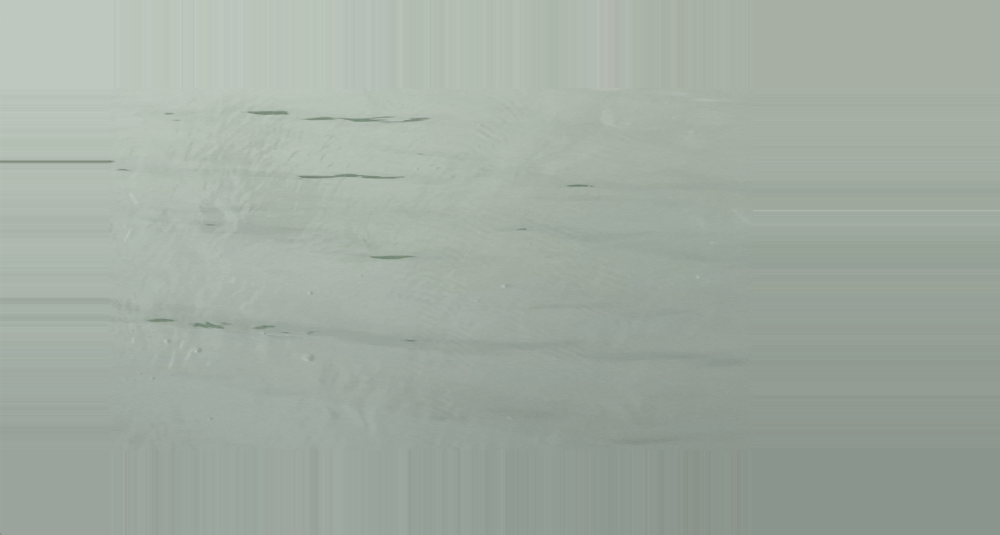
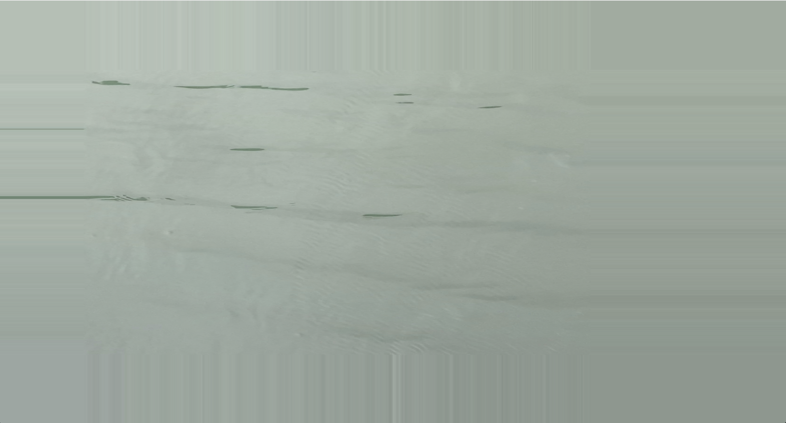

Stasis
Audiovisual installation for De Week van de Klank ~ La Semaine du Son 2024
ICE (in case of emergency)
@ Cellule 133A, Av. Ducpétiaux 133A, 1060 Bruxelles
25-01-2024
This installation investigates the concept of stasis as a state of equilibrium or a state or condition
in which things do not change, move, or progress. As the temperature goes below zero the molecules of
water will create hydrogen bonds, forming a solid structure known as ice. This piece explores
this condition by way of a generative piece made using the programming language SuperCollider
The sound is created by a system consisting of two synthesizers,
each following a separate routine. This results in a piece which never truly progresses,
as there is no beginning or ending, and which in fact could be played indefinitely. The listener is asked
to accept a static condition, and in doing so is able to become aware of the nuances of the sound.
At the same time this allows room for stillness and perhaps even reflection.
The accompanying visualisation uses stills taken from video recordings made by the artist.
This highlights the inherently static nature of film as a sequence of still images.
The images are chosen at random and in real time which ties in with the generative nature
of the sound installation.
>>>> Download SuperCollider code
>>>> Download the pamphlet

